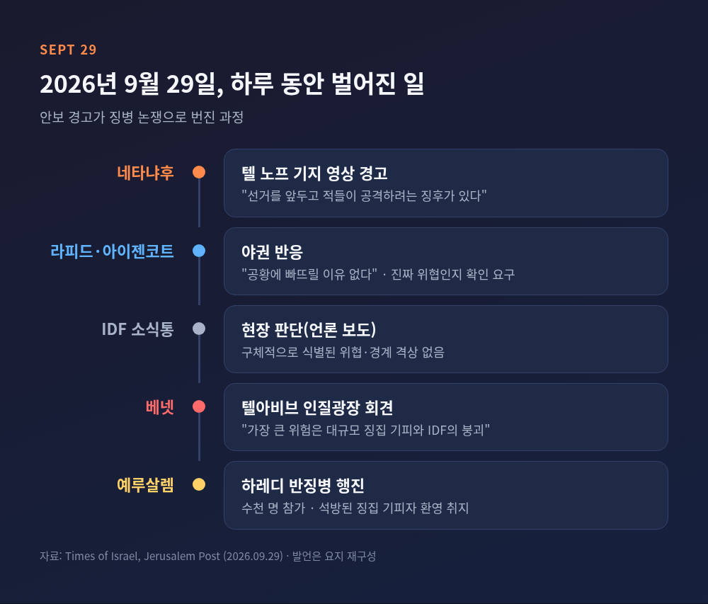
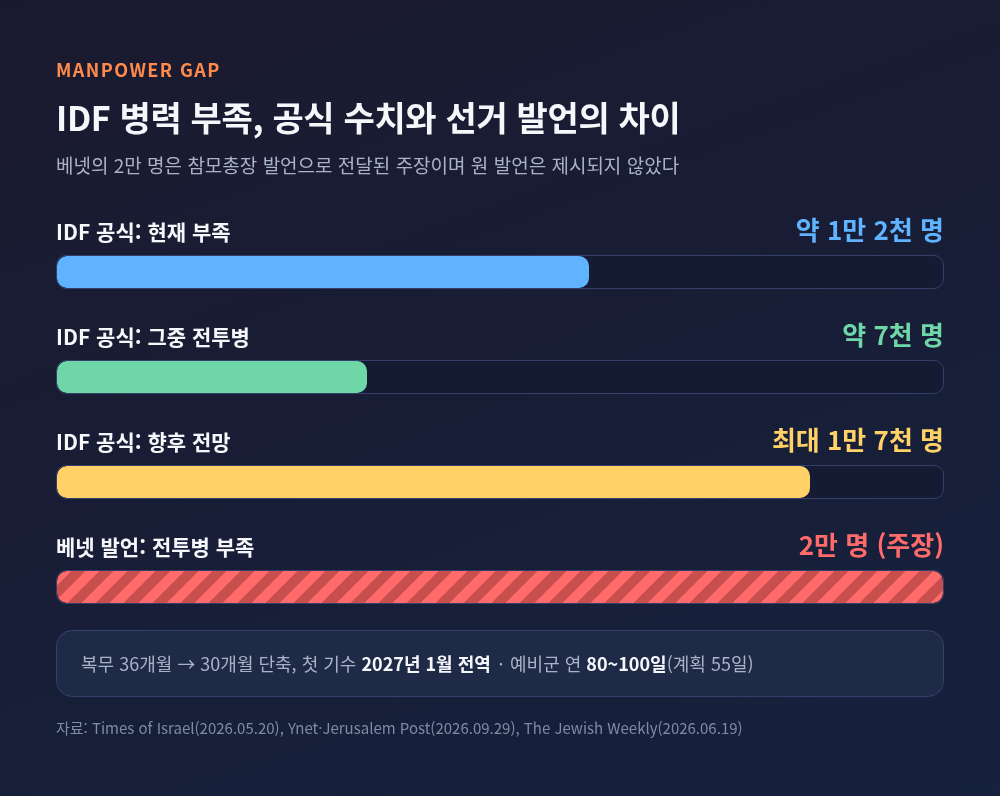
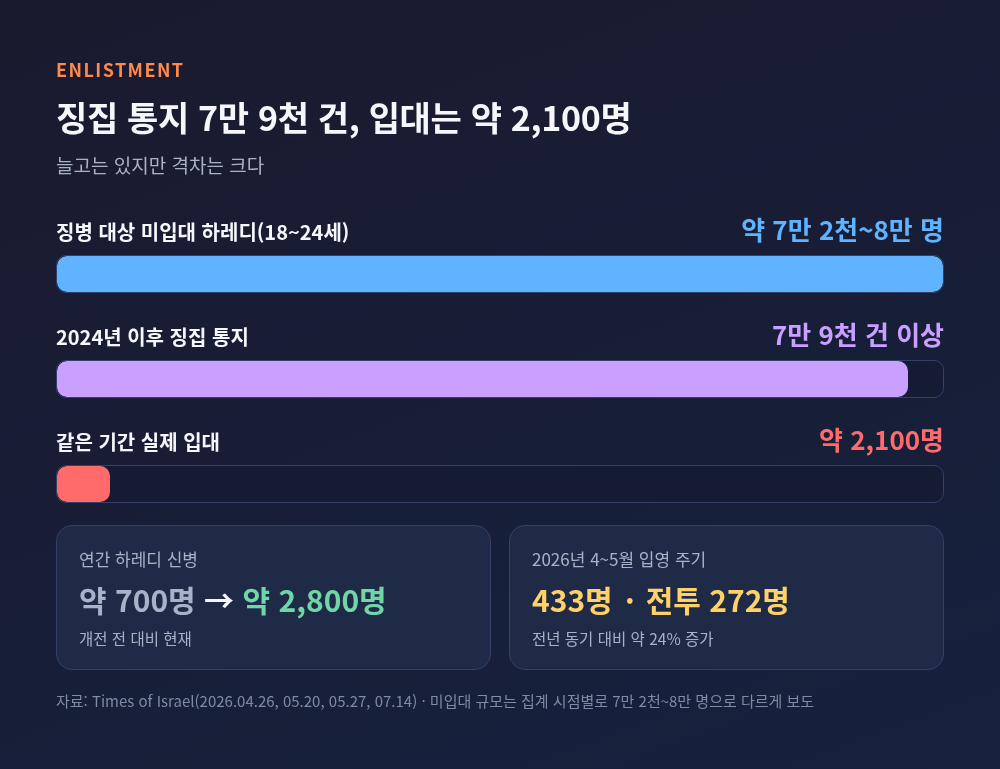
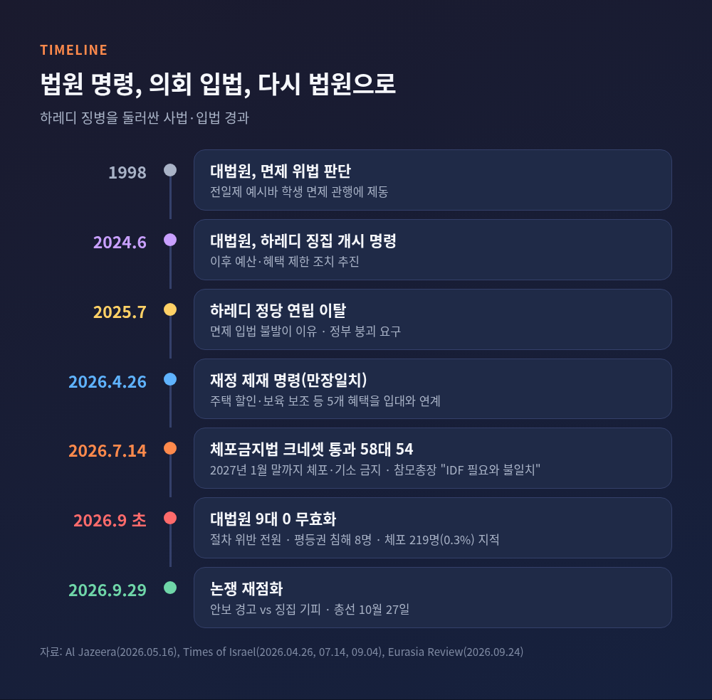
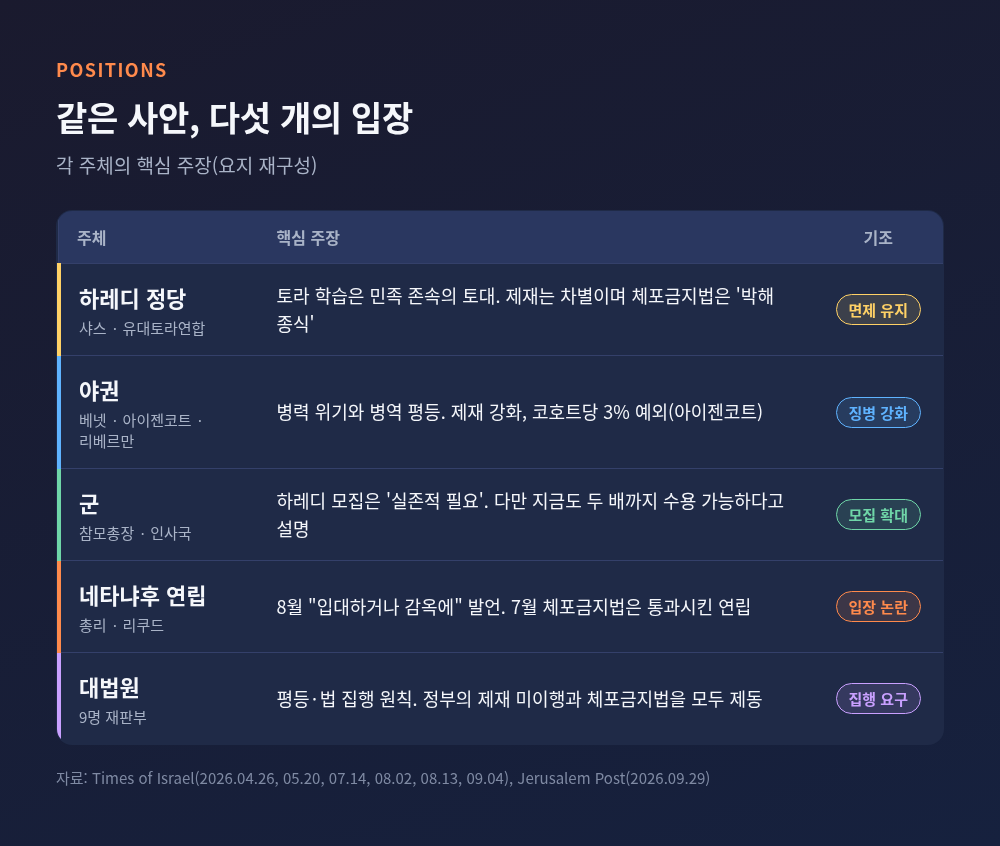
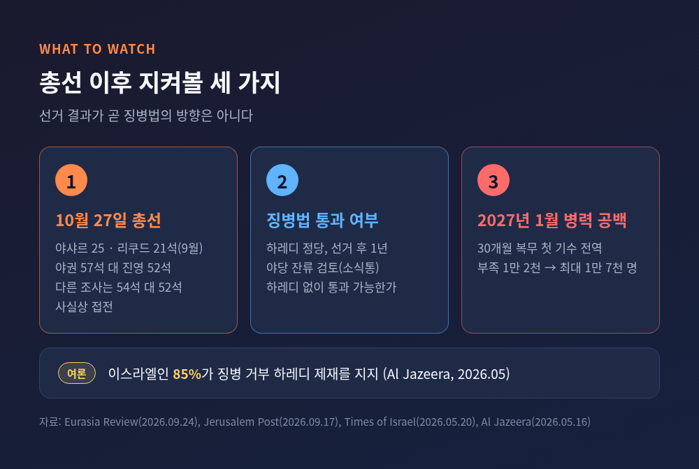

이스라엘 초정통파 징병 기피 논란, 총선 앞두고 병력난이 쟁점이 된 이유
이번 글에서는 이스라엘 초정통파(하레디)의 징병 기피 논란을 정리해 보겠습니다.
9월 29일 네타냐후 총리의 안보 경고와 베넷 전 총리의 반박이 무엇을 두고 부딪쳤는지, 병력 부족과 사법부 판단은 어떤 상황인지, 10월 27일 총선까지 무엇을 지켜봐야 하는지 차례로 살펴봅니다.
3줄 요약
- 9월 29일 네타냐후 총리가 "선거 앞두고 적이 공격하려는 징후가 있다"고 경고하자, 베넷 전 총리는 "가장 큰 위험은 대규모 징집 기피와 IDF의 붕괴"라고 맞받았습니다.
- IDF 인사 기획 부서는 현재 약 1만 2천 명의 병력이 부족하고 1만 7천 명까지 늘 수 있다고 밝혔습니다. 하레디 징병 대상 약 7만 2천~8만 명은 대부분 입대하지 않은 상태입니다.
- 대법원은 9월 초 체포금지법을 9대 0으로 무효화했습니다. 하레디 정당은 토라 학습권과 정체성을 이유로 반발하고 있어 총선의 핵심 쟁점으로 남았습니다.
무슨 일이 있었나 — 안보 경고와 '징집 기피' 반박
9월 29일 네타냐후 총리는 텔 노프 공군기지에서 촬영한 영상을 공개했습니다.
"선거를 앞두고 적들이 우리를 공격하려 한다는 징후가 있다"는 내용이었습니다(Times of Israel).
총선은 10월 27일입니다.
야권은 곧바로 의문을 제기했습니다.
브리핑을 받은 야당 대표 라피드는 "국민을 공황에 빠뜨릴 이유가 없다"고 말했습니다.
아이젠코트는 진짜 위협인지 정치적 술수인지 확인하라고 요구했고, 이스라엘 매체는 IDF 소식통이 구체적으로 식별된 위협이나 경계 격상은 없다고 전했다고 보도했습니다.
같은 날 베넷 전 총리는 텔아비브 인질광장에서 기자회견을 열었습니다.
그는 "네타냐후는 안보 위험을 경고하지만, 정작 가장 큰 위험, 곧 대규모 징집 기피와 IDF의 붕괴를 이끌고 있다"고 말했습니다.
"징집 기피 연립에 투표하는 것은 복무하는 이들에 대한 반대표"라는 발언도 덧붙였습니다(Times of Israel, Jerusalem Post).

같은 날 예루살렘에서는 수천 명이 참여한 하레디 반징병 행진이 열렸습니다.
군 교도소에서 풀려난 징집 기피자를 환영하는 자리였고, 피켓에는 "우리 아이들을 시온주의의 제단에 바치지 않겠다"는 문구가 보였습니다(Jerusalem Post).
리베르만은 이를 "기피자 환영 퍼레이드"라고 비판했습니다.
하루 사이에 안보 경고, 정치 공방, 거리 시위가 한꺼번에 겹친 셈입니다.
왜 중요한가 — 숫자로 본 병력 부족
이 논쟁이 선거 쟁점이 된 이유는 군의 수요와 하레디의 입대 규모 사이에 간극이 크기 때문입니다.
IDF 인사국 기획·인력관리과장 샤이 타예브 준장은 5월 20일 현재 병력이 약 1만 2천 명 부족하고, 이 수치가 1만 7천 명까지 늘 수 있다고 밝혔습니다(Times of Israel). 6월 보도에 따르면 부족 인원 가운데 전투병은 약 7천 명입니다(The Jewish Weekly).
에얄 자미르 참모총장은 "10개의 적신호를 제기한다. IDF는 스스로 무너질 것"이라고 경고한 것으로 전해집니다.
병력이 더 빠듯해질 요인도 있습니다.
복무 기간이 36개월에서 30개월로 줄면서, 첫 30개월 복무 기수가 2027년 1월 전역합니다.
예비군의 연간 복무일도 80~100일로, 당초 계획한 55일을 넘어섰습니다.

여기서 수치 하나는 구분해서 보셔야 합니다.
베넷은 참모총장이 "전투병 2만 명 부족"을 말했다고 주장했지만, Jerusalem Post는 참모총장의 원 발언을 제시하지 않았습니다.
IDF 인사 기획 부서가 공개한 수치는 총 1만 2천 명 안팎이며, 전투병은 6천~7,500명 수준입니다(Ynet 등).
선거 국면의 발언과 군 공식 수치는 구분해 읽는 편이 안전합니다.
배경 — 면제, 소환장, 그리고 입대 수치
하레디 전일제 예시바(율법학교) 학생의 병역 면제는 이스라엘 건국 무렵부터 이어진 관행입니다.
대법원은 1998년 면제가 위법이라고 판단했고, 2024년에는 하레디 징집을 시작하라고 명령했습니다(Al Jazeera).
그 뒤의 숫자는 이렇습니다.
- 2024년 이후 하레디 남성에게 발송된 징집 통지는 7만 9천 건 이상, 실제 입대는 약 2,100명입니다(Times of Israel, 4월 26일).
- 18~24세 징병 대상이지만 입대하지 않은 하레디 남성은 약 7만 2천~8만 명으로, 보도 시점과 집계에 따라 다릅니다.
- 개전 전 연 700명 안팎이던 하레디 신병은 현재 2,800명 수준으로 늘었습니다. 4~5월 입영 주기에는 433명이 입대했고, 역대 최다인 272명이 전투 복무를 택했습니다(Times of Israel).
늘고는 있습니다.
다만 IDF는 하레디를 지금의 두 배까지 받을 여력이 있다고 밝혔고, 이스라엘민주주의연구소는 제재만으로는 극적인 변화가 어렵다고 분석했습니다.

쟁점 — 법정과 크네셋의 줄다리기
지난 6개월의 흐름은 사법부와 입법부, 정부가 서로 엇갈린 과정이었습니다.
4월 26일 대법원은 만장일치로 징병 기피 하레디 남성에게 재정 제재를 하라고 정부에 명령했습니다.
주택 구입 할인과 보육·방과후 보조 등 5개 복지 혜택을 입대와 연계하라는 내용이었습니다.
7월 14일 크네셋은 58대 54로 하레디 징병 기피자의 체포·기소를 2027년 1월 말까지 금지하는 법을 통과시켰습니다.
참모총장은 이 법이 IDF의 필요와 "명백히 불일치"한다고 밝혔고, 하스켈 외교부 차관은 항의 사임했습니다. 네타냐후 총리는 표결에 참석하지 않았습니다(Times of Israel).
9월 초 대법원은 이 법을 9대 0으로 무효화했습니다.
9명 전원이 절차 위반을 지적했고, 8명은 평등권을 침해한 위헌이라고 판단했습니다.
법원은 2025년 1월 이후 체포된 하레디가 219명, 징병 의무자의 0.3%에 그친다며 "집행이 입대 동기를 줄인다"는 정부 주장과 맞지 않는다고 짚었습니다(Times of Israel).

각자의 입장 — 세 개의 시선
한쪽의 논리만 보면 사안이 단순해 보입니다. 세 시선을 나란히 놓아 보겠습니다.
하레디 정당(샤스·유대토라연합)은 토라 학습이 유대 민족 존속의 토대라고 말합니다.
유대토라연합(UTJ)의 고프크네트는 4월 판결을 두고 "유대 정체성의 심장에 대한 타격"이라고 했고, "어떤 제재도 토라의 목소리를 멈출 수 없다"고 밝혔습니다.
7월 법안 통과 때는 "박해 종식"이라는 표현을 썼고, 법원이 개입하면 "전례 없는 시민 불복종"을 경고했습니다.
세속·야권은 병역 평등과 병력 위기를 앞세웁니다.
아이젠코트는 "타협은 없다"며 코호트당 3%의 특출한 인재만 예외로 하자고 제안했습니다.
베넷은 하레디 교육기관 지원 삭감과 징병 방해 조사위원회를 공약했습니다.
군은 하레디 모집이 부담 분담을 넘어 "실존적 필요"라는 입장입니다. 동시에 모집 여력은 이미 있다고 말합니다.
네타냐후 총리는 8월 "토라를 공부하지 않는 자는 입대하거나 감옥에 갈 것"이라며 다음 정부에서 전면적 징병법을 추진하겠다고 밝혔습니다. 반면 베넷은 이를 "한심한 스핀"이라고 비판했고, 하레디 정당인 유대토라연합도 공허한 약속이라고 반응했습니다.

두 가지 단서가 필요합니다.
베넷의 붕괴 경고도, 네타냐후의 공격 경고도 선거운동 한가운데에서 나온 발언입니다.
어느 한쪽 주장만으로 실제 위험을 단정하기는 어렵습니다.
전망 — 10월 27일 이후
이번 총선은 1988년 이후 조기 실시가 아닌 정기 일정으로 치러지는 첫 선거라는 평가가 나옵니다(Eurasia Review).
9월 여론조사에서는 아이젠코트의 야샤르가 25석, 리쿠드가 21석이었고, 야권 57석 대 네타냐후 진영 52석이라는 결과와 54석 대 52석이라는 결과가 함께 나왔습니다.
사실상 접전입니다.
여론은 징병에 기울어 있습니다.
Al Jazeera는 이스라엘인의 85%가 징병을 거부하는 하레디에 대한 제재를 지지한다고 전했습니다.
그런데 정작 하레디 정당들은 선거 후 첫 1년을 야당에 머물며 징병법 책임에서 비켜서는 방안을 검토 중이라고 Jerusalem Post가 소식통을 인용해 보도했습니다. 공식 결정은 아닙니다.
앞으로 지켜볼 지점은 셋입니다.
첫째, 선거 결과가 어느 진영에 과반을 주는가.
둘째, 새 정부가 하레디 정당 없이 징병법을 통과시킬 수 있는가.
셋째, 2027년 1월 복무 단축 기수 전역 전에 병력 공백을 어떻게 메우는가.

한국에도 시사점이 있습니다.
한국 역시 병역 자원 감소와 복무 형평성 논의를 함께 안고 있습니다.
징병제 국가에서 특정 집단의 면제가 사회적 신뢰를 어떻게 흔드는지 보여 주는 사례라는 점에서, 이스라엘의 선택은 참고할 만합니다.
마지막으로 한 가지만 덧붙이겠습니다.
이 논쟁은 안보 문제이면서 동시에 종교, 평등, 국가 정체성이 얽힌 문제입니다.
숫자는 군이 필요로 하는 규모를 말해 주지만, 하레디가 지키려는 가치까지 숫자로 재기는 어렵습니다.
"병력의 문제는 결국 공동체가 부담을 어떻게 나누느냐의 문제"
이스라엘이 10월 27일 이후 그 답을 찾겠느냐고 물으신다면, 지금으로서는 어느 정부가 들어서든 하레디 정당 없이 징병법을 통과시킬 수 있는지가 첫 시험대가 될 것이라고 말씀드리겠습니다.